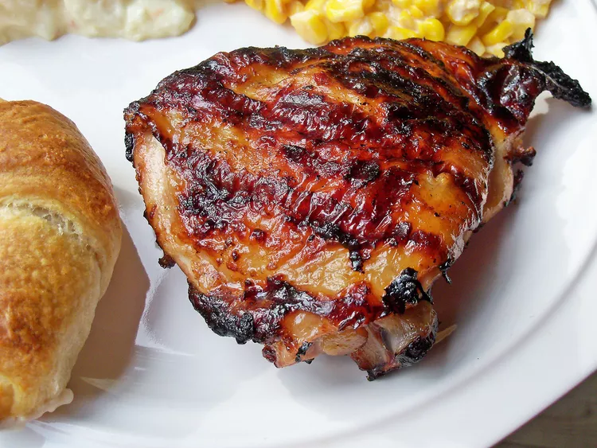

Chicken Marinade

This Italian dressing chicken marinade is a super simple but delicious way to add flavor before grilling.
Ingredients
- 1 (16 ounce) bottle Italian-style salad dressing
- 1 teaspoon garlic powder
- 1 teaspoon salt
- 4 skinless, boneless chicken breast halves